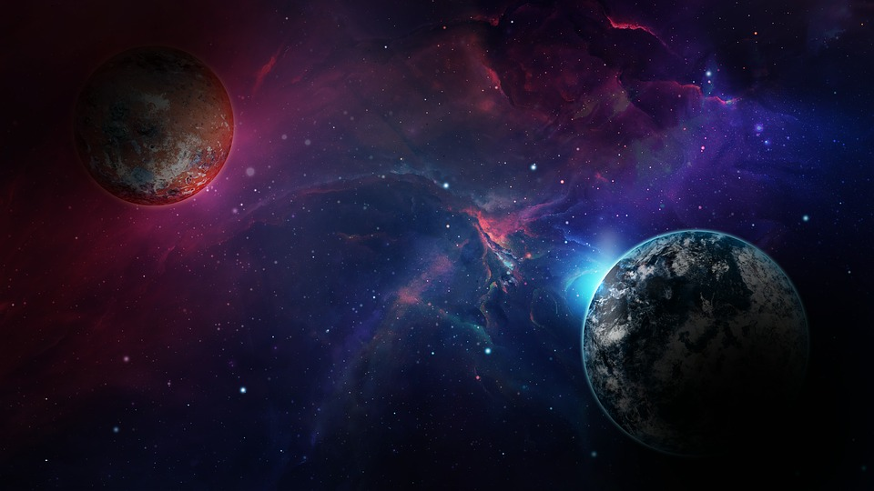
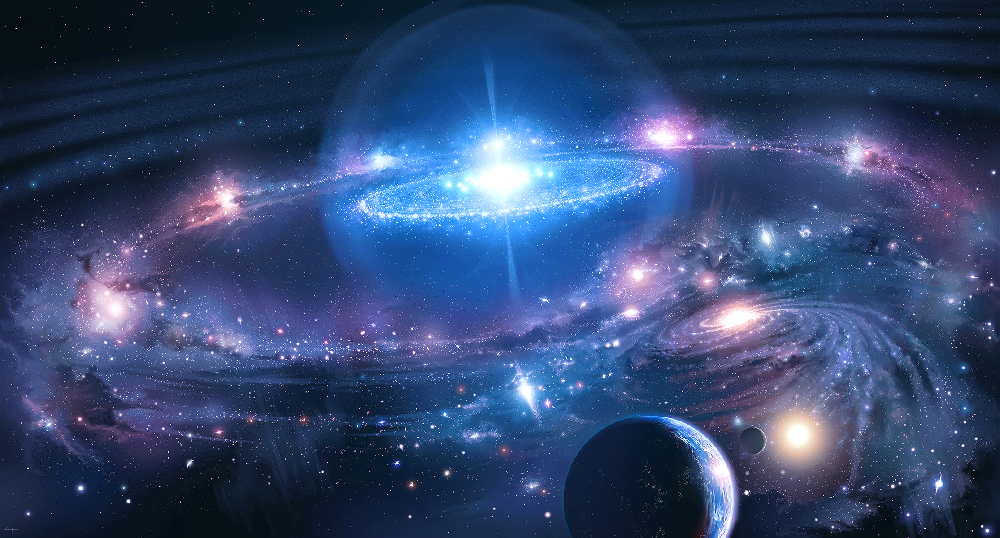

Maravillas del Universo
Somos una Imposibilidad en un Universo Imposible
Descubre cosas Increíbles
¿Qué es el Universo? ¿Cómo es? ¿Por qué existe? ¿Cómo surgió? Muchas de las preguntas que se hace el ser humano desde que empezó su evolución se refieren al mundo que nos rodea.
Las Estrellas
Esos puntos brillantes en el cielo nocturno... Aunque la mayor parte del espacio que podemos observar está vacía, es inevitable que nos fijemos en el brillo de cada estrella.
Una estrella (del Universo) es una esfera de plasma. Podemos investigar una desde cerca, el Sol. Esto ha servido para obtener mucha información sobre las estrellas. Por ejemplo, sabemos que a causa de la atracción gravitatoria, la materia de una estrella tiende a caer hacia el centro y concentrarse allí. Eso hace que aumente su temperatura y presión.
A partir de ciertos límites, este aumento provoca reacciones nucleares que liberan energia, generando un impulso hacia afuera que equilibra la fuerza de la gravedad, con lo que el tamaño del astro se mantiene más o menos estable durante un tiempo. Mientras, emite al espacio grandes cantidades de radiación, entre ellas, la luminosa. Se hizo - y se hace - la luz.
Lo que realmente determina la vida y evolución de cada estrella es su masa. Las que tienen poca se mantienen durante mucho tiempo en la secuencia principal. Las de masa intermedia duran menos, y suelen evolucionar hacia gigantes rojas, que desprenden una nebulosa planetaria y se quedan como enanas blancas. Las estrellas supermasivas tienen una vida más corta y violenta, y muchas acaban explotando como supernovas.
Limitar nuestra atención a las materia terrestres sería limitar el espíritu humano
- 
- 